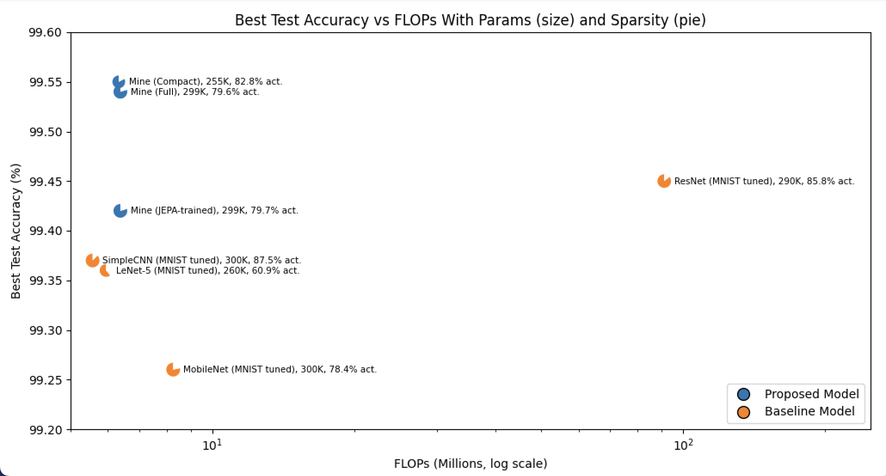
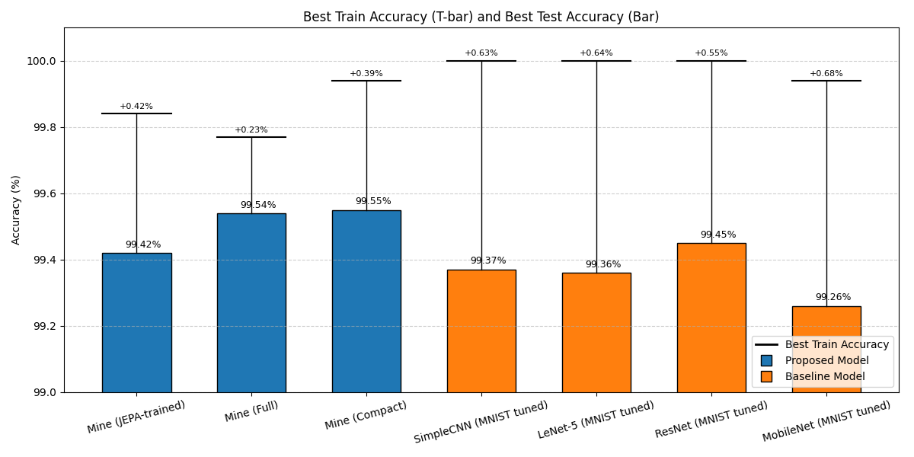
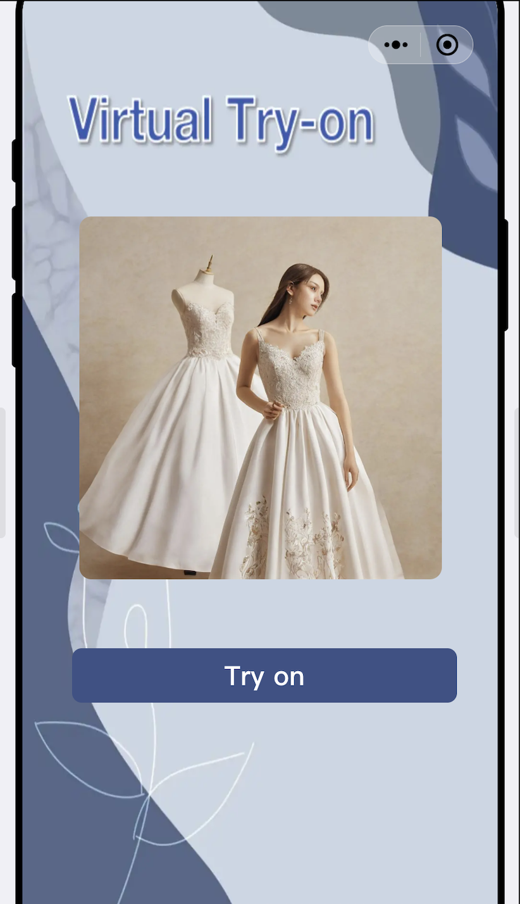
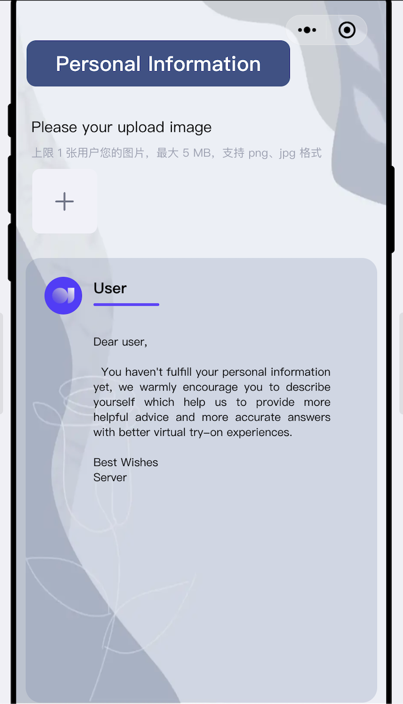
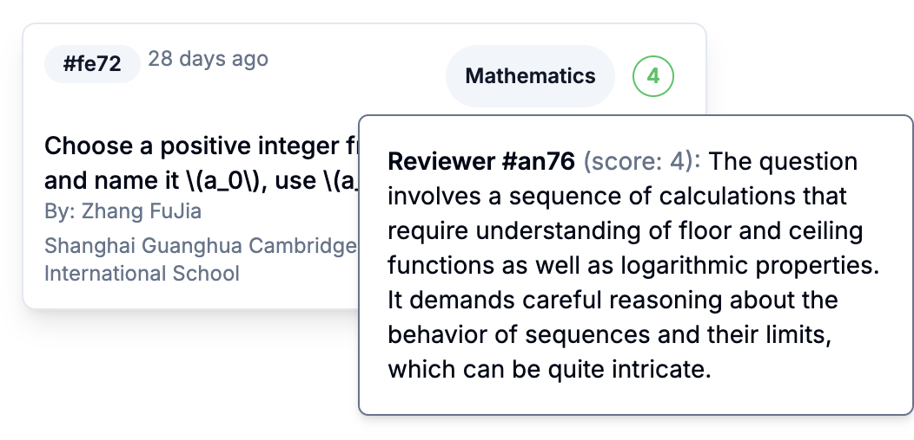
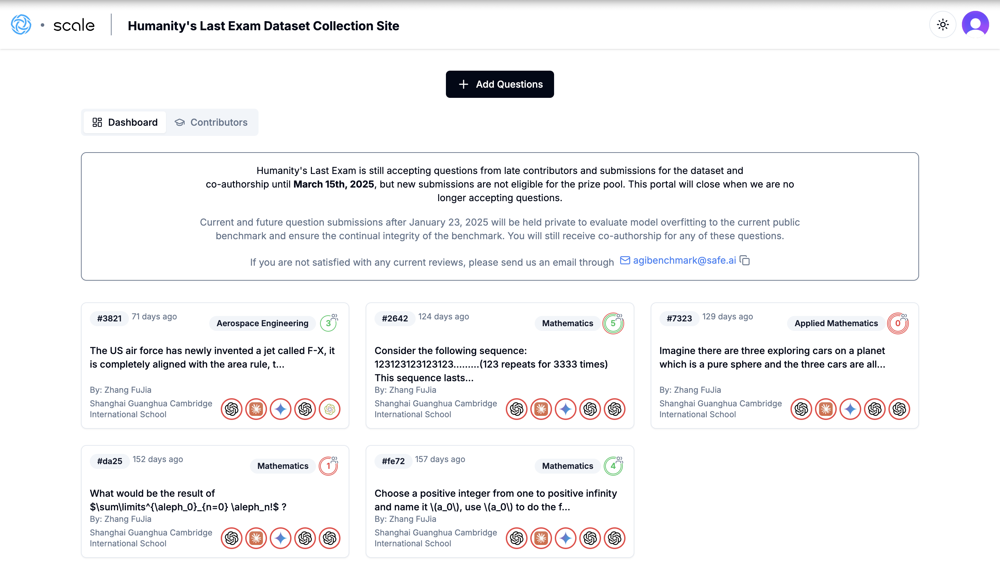

2025/10
Reboot mature cortical models
Invent a neuron definition that successfully achieved higher efficiency compared with LSTM cell in language modeling tasks.
Source: GitHub Repo
2025/08
Transformer Train and confirm failure in early cortical models
Successfully train a Transformer to SOTA level ppl, but failed to scaling up early cortical models.
2025/03
Early cortical models
Build cortical-style model with new activation function&architecture and succeed on MNIST.


2025/01
Virtual Try-on
Build prototype by utilizing AI workflows in coze to generate virtual try-on experiences (Done in 2025 GIR camp).
Source: Project page


2024/11
Humanity's Last Exam
Attempts to frame hard questions for frontier AI models, but failed to be included in dataset.


2024/10
Early paper writing
Forming ideas including MoE, Large Concept Model, but lack formal experiments to support.
Source: Preview draft (PDF)
2024/08
Origin
Reading Life 3.0
First bringing me the big, fascinating future of the world with AI.